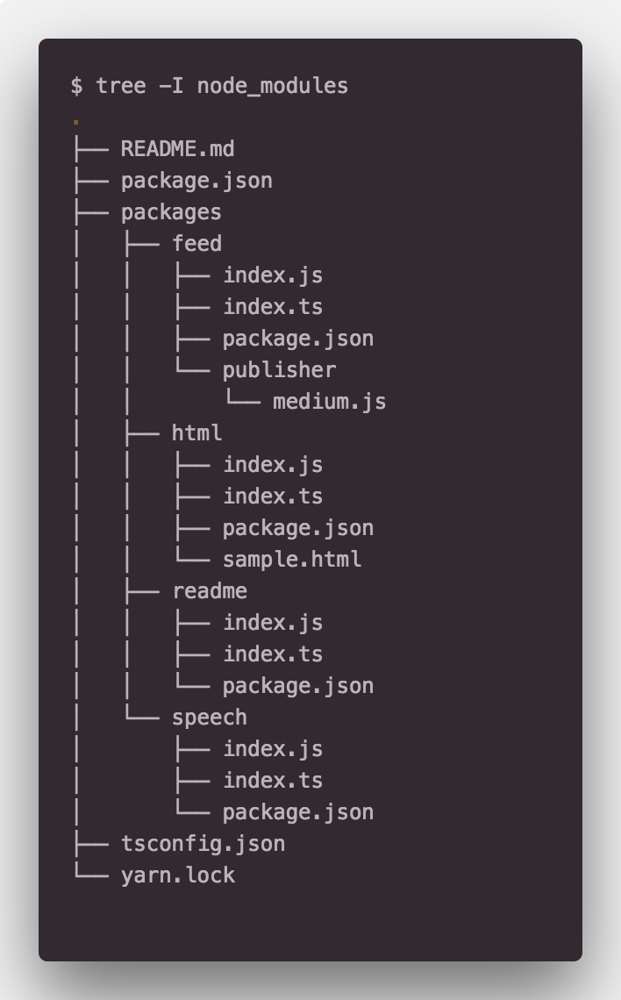

TypeScript, Monorepo
타입스크립트와 모노레포 셋업은 매우 지난한 싸움이다. 맞지 않는 부분도 상당히 많다. 내가 일전에 무엇을 남겼는지 기억은 나지 않으나 비슷한 글을 남겼었다.
🌸 모노레포. Lerna? Yarn Worksapce!
위 글에 모노레포가 왜 필요지에 대해서는 남겨 놨을 것이라 생각한다. 어떻게 셋업을 하는지 글을 남겼었지만 그럼에도 불구하고 타입스크립트를 마주하면 쉽지않은 상황이 발생한다. 특히 프론트엔드에서 그러하다.
프로젝트를 가볍게 생성한다고 해보자. 내가 자주 쓰는 Next.js 의 빵판 이나 아니면 그냥 create-react-app 에 react-scripts-ts 를 먹여서 TypeScript 로 프로젝트를 셋업하면 작업하는 내내 .js , .map 등은 더이상 밖으로 노출되지 않고 메모리안에서 처리된다. 때문에 우리는 .gitignore 를 따로 처리하면서 파일 IO에 대한 성능 이슈등으로 부터 자유롭다. 바람직하다.
그럼 무엇이 문제인가?
모노레포의 구성은 아래 사진과 유사하다.

이 이미지는 이전에 쓴 글에서 가져온 것인데 프론트엔드가 없는 라이브러리의 구현 구조다. 구조를 보면 feed, html, readme, speech 의 패키지가 존재한다. 편의상 readme 를 create-react-app 등으로 생성한 메인 클라이언트 앱 이라고 생각하자. 그럼 여기서 packages/readme/index.js 는 지워진다. 프로젝트 셋업에 따라 .js는 관리하지도 보여지지도 않는다.
나머지 패키지들은 컴파일의 결과로써 .js 을 유지해야한다. 각 패키지를 리엑트 컴포넌트 라고 생각하고 메인인 readme 에서 참조를 하게 되면 모노레포의 구성 이유와 같이 외부 모듈로 처리하므로 import 구문을 통해 로드시에 .js 가 로드되므로 반드시 .js 가 필요하다.
그럼 메인 프로젝트인 readme 는 컴파일을 따로 돌려서 .js 를 생성하면 안되고 나머지 패키지들에 대해서는 컴파일을 통해 .js 를 생성해야한다. 이 부분이 타입스크립트와 모노레포의 조합을 매우 어렵게 만든다. 부분마다 따로 컴파일을 돌리고 IDE 셋업에 매이는등 많은 삽질을 하다가 아마 그만뒀던 경험을 가진 개발자들도 여럿(나만? 👀)있을지 모르겠다.
TypeScript 3
섹션이 하나 더 들어가야하는데 시행착오에 대해서 적을까 하다가 그에 대한 잘 씌여진 글로 대체한다. TypeScript 공식 사이트의 프로젝트 레퍼런스 핸드북과 후이서울에서 작성한 글이다.
- https://engineering.huiseoul.com/타입스크립트-3-0-99e5d45ec439
- https://www.typescriptlang.org/docs/handbook/project-references.html
모노레포에 관련된 글은 아니다. 그러나 프로젝트 빌드와 관련해서 인상적인 발전이 있었다. --build 명령어와 프로젝트 참조를 통해 순차적으로 효율적인 빌드를 적용한다 뭐 이런 내용인데 자세한 내용은 문서에 있다.
Monorepo
그럼 다시 모노레포로 돌아오자. next 나 create-react-app 의 개발환경이 돌면서 추가적으로 나머지 패키지들에서 빌드가 같이 돌아줘야한다. 나머지 패키지들은 컴파일을 통해서 .js 를 생산해 낼 것이고 메인 앱에서는 이들이 .js 를 가지고 있으므로 개발환경에서 바로바로 import 를 할 수 있게 된다.
드디어 추가된 타입스크립트@3 의 프로젝트 레퍼런스와 --build 를 통해 더러운 프론트엔드 + 타입스크립트 + 모노레포 가능해진다.
이에 대한 설명은 글보다 코드로 대신한다.
등아파서 글을 길게 못쓰겠다…